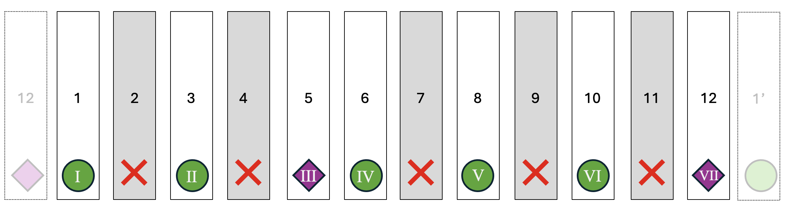
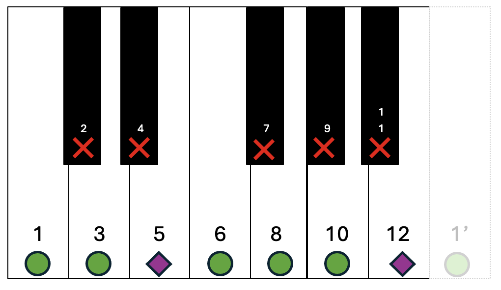
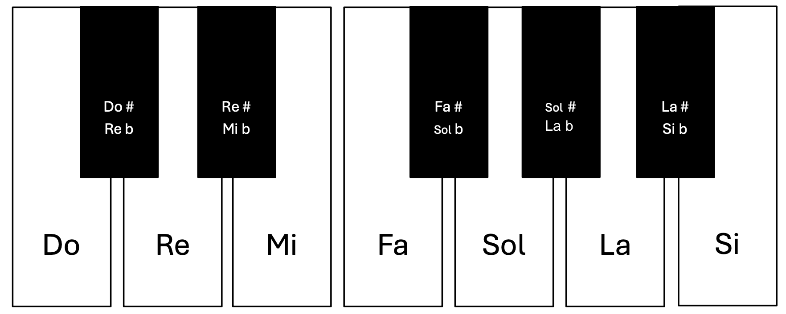
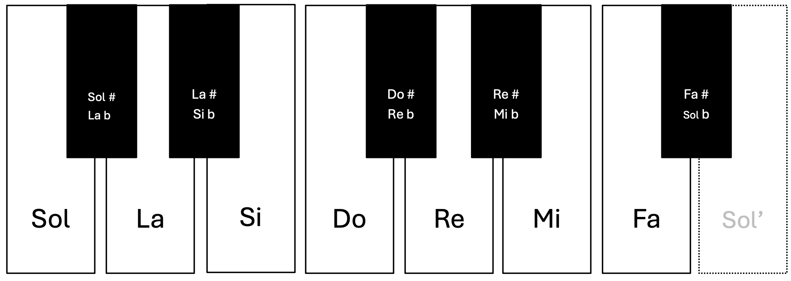
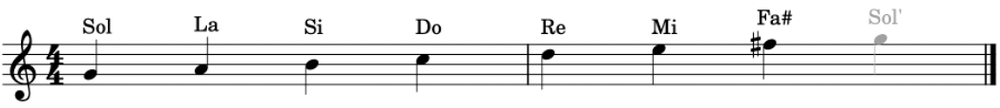

Una escala es una secuencia ordenada de notas musicales (sonidos) organizadas por altura siguiendo un patrón específico de intervalos (distancias entre notas). Una de las escalas más importantes y usadas en la música occidental es la conocida como escala mayor, que tiene siete notas con distancias:: T – T – ST- T – T – T – ST.
Vamos a formarla empezando en la nota 1, conocida como tónica (I). A cada nota de la escala se la identifica con su número romano correspondiente (I – II – III – IV – V – VI – VII).
En el siguiente dibujo, si tenemos un círculo, avanzamos dos notas; si tenemos un rombo nos movemos solo 1.

Como podéis observar, solo usamos los sonidos: 1 – 3 – 5 – 6 – 8 -10 y 12. El resto los he marcado con un color más oscuro y con una X encima, ya que no forman parte de la escala. De hecho, vamos a colorearlas de negro para diferenciarlas, y las vamos a hacer más pequeñas y delgadas.

Al juntarlas, como podéis observar, obtenemos un teclado de piano, en el cual las notas blancas son las que se corresponden con la escala mayor. El piano se construyó de esta forma ya que la escala mayor era la más utilizada. Esas 7 notas son las mismas que vimos al principio. A las notas intermedias (teclas negras) se les pone como nombre el de la nota junto con una alteración: un sostenido (#) aumenta un semitono, un bemol (b) lo baja y un becuadro (♮) anula el efecto del semitono y el bemol. A esta escala podemos bautizarla entonces como escala de do mayor:
- Do: la tónica es do
- Mayor: la distancia entre las notas que la conforman es de T – T – ST- T – T – T – ST.

Es decir, para formar cualquier tipo de escala solo necesitamos dos elementos: la tónica y su código de distancias entre notas.
Por ejemplo, vamos a crear la escala mayor de Sol. Colocamos las notas desde la tónica (sol):

Ahora tenemos que usar el código de las escalas mayores:

Como podemos observar, en la escala de Sol existe una nota alterada: no se utiliza fa, sino fa#.
